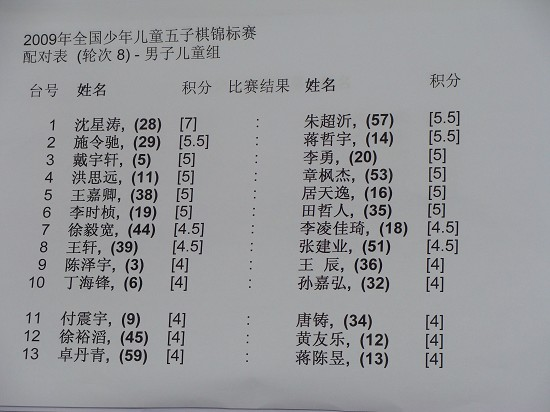
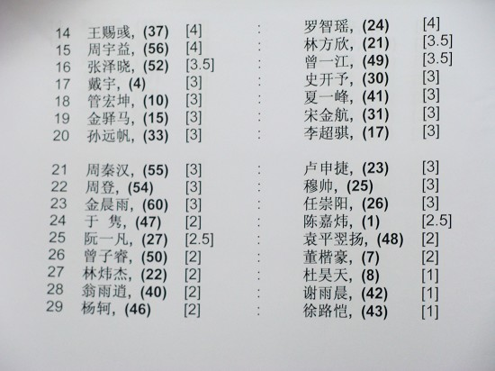
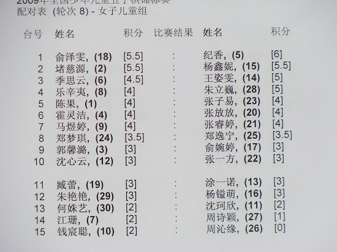

全国少年儿童五子棋比赛第八轮对阵表
#1 全国少年儿童五子棋比赛第八轮对阵表 作者：有志青年 发表时间：2009-8-10 16:57:37


#2 Re:全国少年儿童五子棋比赛第八轮对阵表 作者：有志青年 发表时间：2009-8-10 16:59:32
带孩子比赛，好累！累
#3 Re:全国少年儿童五子棋比赛第八轮对阵表 作者：zzzzy 发表时间：2009-8-10 17:03:44
少年男子组（第八轮）：1 王硕, (9) [6.5] : 周凌宵, (19) [5]
2 岳杨, (15) [5] : 金洪俐, (5) [5]
3 佟明宇, (8) [4] : 何浠可, (3) [4.5]
4 朱佳晨, (21) [4.5] : 魏佳星, (10) [4]
5 朱佳峰, (22) [4] : 丰伟诚, (2) [4]
6 岳璋, (16) [3.5] : 张钟元, (18) [3.5]
7 徐嘉琦, (12) [3] : 宁安文, (7) [3]
8 杨之江, (13) [3] : 邢晨涛, (11) [3]
9 曾凌昊, (17) [2] : 范思源, (1) [2.5]
10 易礼周, (14) [2.5] : 周威宇, (20) [1]
11 姜方正, (4) [1.5] : 梁卫, (6) [2]
少年女子组（第七轮）：
1 汪清清, (9) [6] : 邹沄, (14) [3.5]
2 李芝淯, (5) [3] : 刘恂, (6) [4.5]
3 朱泽腐, (13) [3] : 黄琼莹, (3) [4]
4 蒋思雨, (4) [4] : 邵怡, (7) [3]
5 曾冰洁, (12) [3] : 段明媚, (2) [2]
6 王晓, (10) [2.5] : 侍蓓蓓, (8) [1]
7 崔唯佳, (1) [0] : 许梦婷, (11) [2.5]
我更关心少年组的比赛，看看谁得冠军。
#4 Re:全国少年儿童五子棋比赛第八轮对阵表 作者：屏蔽 发表时间：2009-8-10 17:28:39
少年组还有得看啊……
按这个对阵，还剩两轮，王硕六胜一和基本夺冠；还剩一轮，汪清清六胜已经夺冠
前年还剩一轮，我六胜，仍然不能保证夺冠，比赛结束后芦海小分比我高
要竞争啊竞争！！——
儿童组的话，沈星涛是不是浙江赛夺冠那个……七连胜的战绩，基本无人可挡，冠军吧
女子组不太清楚，不过看来还很激烈？
#5 Re:全国少年儿童五子棋比赛第八轮对阵表 作者：黄药师 发表时间：2009-8-12 7:49:36
沈星涛 很稳的一个小孩子。
从比赛场地出来，从表情看，根本看不出是输是赢！
其他很多小孩子单单看一眼就知道输赢了～